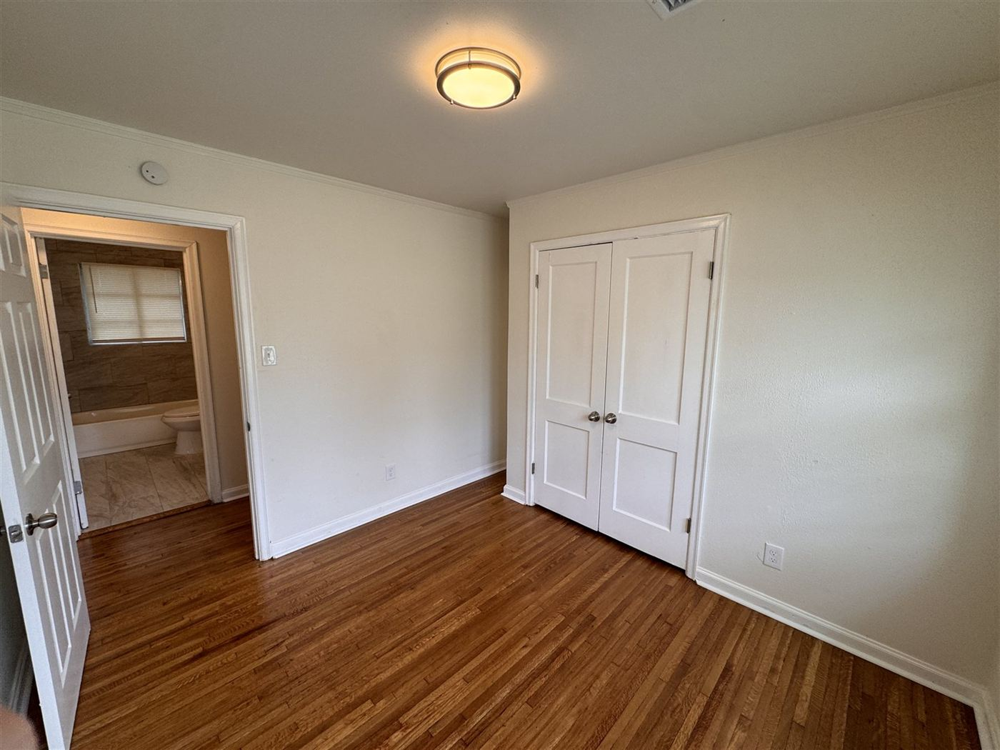
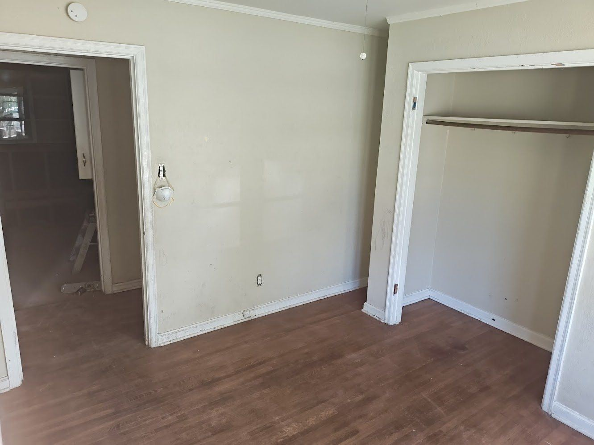

Values marked [PLACEHOLDER] are estimates shown for layout — to be confirmed with real project data.
The Challenge
A House Showing Its Age — and Its Water Damage
When our team first walked through the Quince House, every room told the same story: years of deferred maintenance, finishes long past their prime, and water damage that had gone unaddressed too long. The kitchen carried visible staining along the ceiling line above worn linoleum and dated cabinetry. The primary bedroom was the worst of it — a stained, sagging ceiling, ruined carpet, and debris had left the room unusable.
The rest of the house didn't need rescuing so much as it needed a reset. A dark, wood-paneled hallway. A bathroom with tile and a tub surround original to the home. Bedrooms with tired, mismatched finishes. Individually, none of it was dramatic. Together, it was a house no buyer would walk into twice.
The assignment: take it down to what was sound, fix what wasn't, and bring every room up to one consistent standard.
6 roomstransformed under one roof
From guttedto move-in ready
1 standardcarried through every finish
The Work
Room by Room, One Standard
Drag each slider to compare the before and after. Every room below is the same house — the difference is the work.
01Entry & Living Area
↔
BeforeAfter
First impressions start here, and this one wasn't making the right kind. The main living area was cluttered and worn, with damage along the paneled walls and carpet past saving. We pulled the damaged materials, ran new wood-look plank flooring through the space, repainted the walls and trim, and refreshed the doors connecting to the kitchen and hallway. It's now the open, light-filled room that sets the tone for everything behind it.
02Kitchen
↔
BeforeAfter
The kitchen was showing its age and then some — worn linoleum, dated cabinetry, cluttered counters, and water staining along the ceiling line that pointed to a problem, not just a cosmetic flaw. We gutted the space where needed, then rebuilt it: new cabinetry, a subway tile backsplash, updated countertops, a new sink and fixtures, and durable wood-look plank flooring throughout. Fresh lighting finishes a kitchen that's as functional as it is inviting.
03Bathroom
↔
BeforeAfter
The tile floor and tub surround were original to the home and worn down to prove it. We replaced both with clean, large-format tile, installed a new vanity, toilet, and mirror, and updated the lighting and fixtures throughout. Small footprint, big return — it's now a bright, modern bathroom that punches above its square footage.
04Primary Bedroom
↔
BeforeAfter
This was the room that made the project a rebuild instead of a refresh. Serious water damage had left a stained, sagging ceiling, ruined carpet, and debris throughout — unusable as it stood. We repaired the ceiling and the structure behind it first, then installed new flooring and repainted top to bottom. Fresh trim, updated lighting, and clean neutral finishes turned a total loss into one of the best rooms in the house.
05Bedroom


↔
BeforeAfter
Not every room needs drama — some just need the basics done right. The finishes here were tired and plain, out of step with where the rest of the house was headed. We refinished the flooring, repainted throughout, and updated the closet doors and hardware to match the home's new standard. A simple, confident refresh that makes the room feel new again.
06Hallway
↔
BeforeAfter
A dark, narrow hallway with dated wood paneling connected the bedrooms — and did the house no favors. New flooring, fresh paint, and an updated light fixture brightened what used to be the darkest stretch of the home. Small space, same level of care: it now reads as a natural extension of the renovation instead of a leftover from before it.
“You'd never guess it was the same house. Every room feels brand new.”
Wood-look plank flooring run continuously through the main rooms, with tile in the bath.
Paint & Drywall
Walls and trim repainted top to bottom in clean neutrals; damaged drywall repaired or replaced.
Kitchen Remodel
New cabinetry, countertops, subway tile backsplash, sink, and fixtures.
Bathroom Remodel
New tub surround, large-format tile, vanity, toilet, mirror, and fixtures.
Lighting & Fixtures
Updated light fixtures and hardware in every room, brightening the darkest spaces.
Ceiling & Structural Repair
Water-damaged ceilings and the structure behind them repaired before any finishes went in.
The Timeline
Demo → Build → Finish
Every Delta project follows the same process — consultation, planning, construction, walkthrough. Here's how that played out on site at the Quince House.
1
Demo
Damaged carpet, paneling, dated cabinetry, and compromised ceiling material came out first — down to what was sound, and nothing that wasn't.
2
Build
Structural and ceiling repairs, drywall, then the big installs: kitchen cabinetry, bath tile and vanity, and new flooring through the whole interior.
3
Finish
Paint, trim, lighting, hardware, and fixtures — the details that make six separate rooms read as one finished home — then the final walkthrough.
The Quince House went from dated and water-damaged to fully move-in ready — not by treating six rooms as six projects, but by holding every one of them to the same standard. Continuous flooring, one cohesive paint palette, and consistent hardware and lighting mean the home reads as a whole, not a patchwork of fixes.
Just as important is what you can't see: the ceiling and structural repairs that dealt with the water damage at its source, so the new finishes are built on something sound. That's the difference between a renovation that photographs well and one that holds up. We build for both.
Want Results Like This?
Whether it's one dated room or a whole interior, we'll walk the space with you and give you a clear, honest estimate — no surprises.